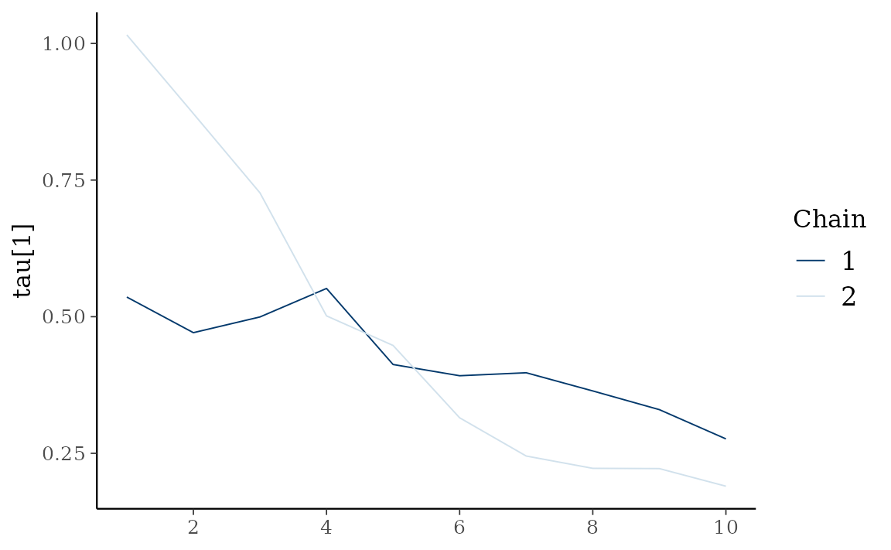

etf <- etf_vix[1:55, 1:3]
# Split-------------------------------
h <- 5
etf_eval <- divide_ts(etf, h)
etf_train <- etf_eval$train
etf_test <- etf_eval$testModels with Stochastic Volatilities
By specifying cov_spec = set_sv(),
var_bayes() and vhar_bayes() fits VAR-SV and
VHAR-SV with shrinkage priors, respectively.
- Three different prior for innovation covariance, and specify through
coef_spec- Minneosta prior
- BVAR:
set_bvar() - BVHAR:
set_bvhar()andset_weight_bvhar()
- BVAR:
- SSVS prior:
set_ssvs() - Horseshoe prior:
set_horseshoe() - NG prior:
set_ng() - DL prior:
set_dl()
- Minneosta prior
-
sv_spec: prior settings for SV,set_sv() -
intercept: prior for constant term,set_intercept()
set_sv()
#> Model Specification for SV with Cholesky Prior
#>
#> Parameters: Contemporaneous coefficients, State variance, Initial state
#> Prior: Cholesky
#> ========================================================
#> Setting for 'shape':
#> [1] rep(3, dim)
#>
#> Setting for 'scale':
#> [1] rep(0.01, dim)
#>
#> Setting for 'initial_mean':
#> [1] rep(1, dim)
#>
#> Setting for 'initial_prec':
#> [1] 0.1 * diag(dim)SSVS
(fit_ssvs <- vhar_bayes(etf_train, num_chains = 2, num_iter = 20, coef_spec = set_ssvs(), cov_spec = set_sv(), include_mean = FALSE, minnesota = "longrun"))
#> Call:
#> vhar_bayes(y = etf_train, num_chains = 2, num_iter = 20, coef_spec = set_ssvs(),
#> cov_spec = set_sv(), include_mean = FALSE, minnesota = "longrun")
#>
#> BVHAR with Stochastic Volatility
#> Fitted by Gibbs sampling
#> Number of chains: 2
#> Total number of iteration: 20
#> Number of burn-in: 10
#> ====================================================
#>
#> Parameter Record:
#> # A draws_df: 10 iterations, 2 chains, and 177 variables
#> phi[1] phi[2] phi[3] phi[4] phi[5] phi[6] phi[7] phi[8]
#> 1 2.0378 -1.530 -0.4724 0.0931 0.5095 0.604 0.0211 0.4329
#> 2 0.1705 -0.800 -0.2281 -0.4403 2.9574 0.956 -0.1733 0.0617
#> 3 -0.3421 0.231 0.4953 -0.3483 -1.0906 0.743 -0.3380 0.3244
#> 4 -0.6871 -0.747 -1.1890 0.3063 -0.1388 0.391 0.6782 0.3690
#> 5 -0.5046 -0.267 0.6911 0.0282 -1.5456 0.350 1.3570 0.3457
#> 6 0.0193 -0.258 0.2528 0.0561 0.7600 0.663 0.0459 0.0450
#> 7 0.0959 -0.222 0.3132 0.3400 -0.7104 0.454 -0.0453 -0.0261
#> 8 -0.0914 -0.161 0.0668 0.7743 0.5555 0.240 0.4406 -0.0356
#> 9 0.2749 -0.271 -0.1831 0.5293 -0.0446 0.642 -0.1664 0.2108
#> 10 0.1282 -0.109 0.2150 0.5191 -0.4313 0.432 0.1063 -0.0206
#> # ... with 10 more draws, and 169 more variables
#> # ... hidden reserved variables {'.chain', '.iteration', '.draw'}Horseshoe
(fit_hs <- vhar_bayes(etf_train, num_chains = 2, num_iter = 20, coef_spec = set_horseshoe(), cov_spec = set_sv(), include_mean = FALSE, minnesota = "longrun"))
#> Call:
#> vhar_bayes(y = etf_train, num_chains = 2, num_iter = 20, coef_spec = set_horseshoe(),
#> cov_spec = set_sv(), include_mean = FALSE, minnesota = "longrun")
#>
#> BVHAR with Stochastic Volatility
#> Fitted by Gibbs sampling
#> Number of chains: 2
#> Total number of iteration: 20
#> Number of burn-in: 10
#> ====================================================
#>
#> Parameter Record:
#> # A draws_df: 10 iterations, 2 chains, and 211 variables
#> phi[1] phi[2] phi[3] phi[4] phi[5] phi[6] phi[7]
#> 1 0.0809 -0.00752 -0.002071 3.51e-02 0.412 -0.0440 -0.267381
#> 2 0.2710 -0.02870 0.009239 -4.91e-02 0.265 0.0246 0.378291
#> 3 0.3025 -0.02276 -0.005333 -1.79e-01 0.467 0.0971 -0.243601
#> 4 0.2302 -0.06192 0.009454 6.92e-05 0.446 0.0162 -0.031782
#> 5 0.1937 -0.04257 -0.004123 -8.27e-02 0.413 0.0853 0.054823
#> 6 0.0257 -0.06237 0.001209 -3.02e-02 0.608 0.0963 -0.005127
#> 7 0.0432 -0.04532 0.002483 7.79e-02 0.329 0.2649 -0.013242
#> 8 0.0186 -0.03026 -0.000310 1.31e-02 0.855 0.3217 0.006335
#> 9 0.0516 -0.03846 0.000177 -6.36e-02 0.494 0.3534 0.005122
#> 10 -0.0325 -0.09304 -0.000295 7.51e-02 0.597 0.6761 0.000938
#> phi[8]
#> 1 0.0961
#> 2 -0.0105
#> 3 -0.0225
#> 4 -0.0450
#> 5 -0.0578
#> 6 -0.0048
#> 7 0.0981
#> 8 -0.2272
#> 9 -0.0901
#> 10 -0.1846
#> # ... with 10 more draws, and 203 more variables
#> # ... hidden reserved variables {'.chain', '.iteration', '.draw'}Normal-Gamma prior
(fit_ng <- vhar_bayes(etf_train, num_chains = 2, num_iter = 20, coef_spec = set_ng(), cov_spec = set_sv(), include_mean = FALSE, minnesota = "longrun"))
#> Call:
#> vhar_bayes(y = etf_train, num_chains = 2, num_iter = 20, coef_spec = set_ng(),
#> cov_spec = set_sv(), include_mean = FALSE, minnesota = "longrun")
#>
#> BVHAR with Stochastic Volatility
#> Fitted by Metropolis-within-Gibbs
#> Number of chains: 2
#> Total number of iteration: 20
#> Number of burn-in: 10
#> ====================================================
#>
#> Parameter Record:
#> # A draws_df: 10 iterations, 2 chains, and 184 variables
#> phi[1] phi[2] phi[3] phi[4] phi[5] phi[6] phi[7] phi[8]
#> 1 0.0310 -0.236 0.047 0.0574 -0.43277 1.2385 1.2367 0.01190
#> 2 0.5393 -0.134 -0.667 0.4740 -0.31451 0.9378 0.5281 0.01768
#> 3 0.6390 0.293 1.239 0.4599 0.17510 0.0654 1.5424 0.05928
#> 4 0.1970 0.407 -0.331 0.3324 0.80410 0.1722 -0.0727 0.06569
#> 5 0.1419 0.310 0.576 -0.0408 -0.25309 0.1469 -0.1614 0.05084
#> 6 0.2203 0.217 -0.155 -0.0506 -0.64713 0.1343 -0.0136 -0.31816
#> 7 0.3102 0.184 -0.455 -0.4565 -0.22632 0.2006 -0.0573 0.22723
#> 8 0.0851 0.216 0.538 -0.0960 0.00178 0.1985 0.5292 -0.06026
#> 9 0.0755 0.243 -0.138 0.2640 -0.17186 0.2603 0.6156 0.00616
#> 10 0.1210 0.336 0.126 0.9189 -0.32827 0.2225 -0.3286 0.03677
#> # ... with 10 more draws, and 176 more variables
#> # ... hidden reserved variables {'.chain', '.iteration', '.draw'}Dirichlet-Laplace prior
(fit_dl <- vhar_bayes(etf_train, num_chains = 2, num_iter = 20, coef_spec = set_dl(), cov_spec = set_sv(), include_mean = FALSE, minnesota = "longrun"))
#> Call:
#> vhar_bayes(y = etf_train, num_chains = 2, num_iter = 20, coef_spec = set_dl(),
#> cov_spec = set_sv(), include_mean = FALSE, minnesota = "longrun")
#>
#> BVHAR with Stochastic Volatility
#> Fitted by Gibbs sampling
#> Number of chains: 2
#> Total number of iteration: 20
#> Number of burn-in: 10
#> ====================================================
#>
#> Parameter Record:
#> # A draws_df: 10 iterations, 2 chains, and 178 variables
#> phi[1] phi[2] phi[3] phi[4] phi[5] phi[6] phi[7]
#> 1 0.5431 0.013731 0.06655 0.030469 -2.37e-05 1.063 -2.98e-07
#> 2 0.3331 0.004485 0.04878 0.001637 1.07e-04 1.052 -7.44e-08
#> 3 0.7956 -0.003487 0.00922 0.067192 5.52e-02 0.944 1.79e-08
#> 4 0.0147 -0.009107 0.02852 -0.012200 2.90e-01 0.878 3.24e-08
#> 5 0.2734 -0.084657 0.06729 -0.000932 4.48e-02 0.944 -9.43e-08
#> 6 0.4411 0.003990 -0.00966 -0.001762 -9.35e-03 1.010 -1.90e-08
#> 7 0.8662 0.016154 0.00810 -0.001345 1.38e-02 1.031 1.65e-06
#> 8 1.1221 0.067756 -0.00233 0.001336 4.82e-04 0.958 -3.13e-06
#> 9 0.7970 0.006391 0.00266 0.125519 2.03e-01 0.971 1.62e-07
#> 10 0.9027 0.000352 -0.00590 0.142406 2.26e-02 0.976 -2.02e-05
#> phi[8]
#> 1 -0.000969
#> 2 -0.004752
#> 3 0.037166
#> 4 0.013956
#> 5 0.004464
#> 6 -0.008978
#> 7 0.001195
#> 8 -0.124456
#> 9 -0.036258
#> 10 -0.005734
#> # ... with 10 more draws, and 170 more variables
#> # ... hidden reserved variables {'.chain', '.iteration', '.draw'}Bayesian visualization
autoplot() also provides Bayesian visualization.
type = "trace" gives MCMC trace plot.
autoplot(fit_hs, type = "trace", regex_pars = "tau")
type = "dens" draws MCMC density plot.
autoplot(fit_hs, type = "dens", regex_pars = "tau")